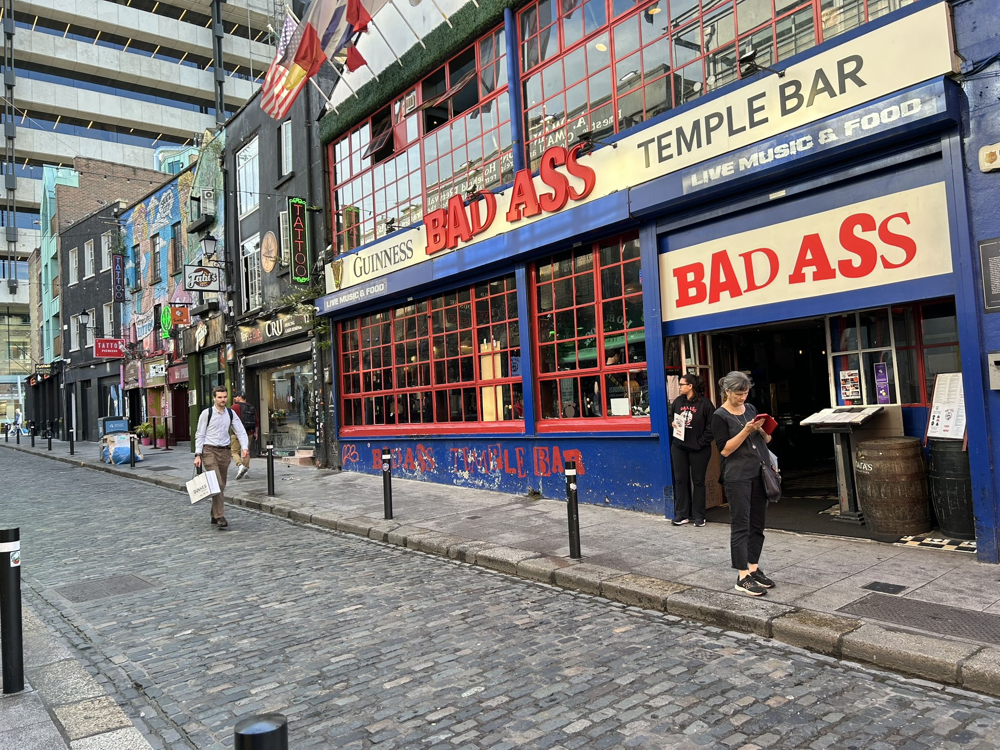

The city center of dublin
dublin
Dublin's city center feels lively yet inviting, a place where history and modern life meet on every street. Cobbled lanes and old brick buildings sit alongside colorful shops, cafés, and bustling markets. Walking through Temple Bar, I hear music spilling from pubs and catch glimpses of street performers sharing their art. Even in the busiest corners, the city has a warm, approachable rhythm — a place that feels both energetic and oddly familiar, as if it’s welcoming you to stay awhile.